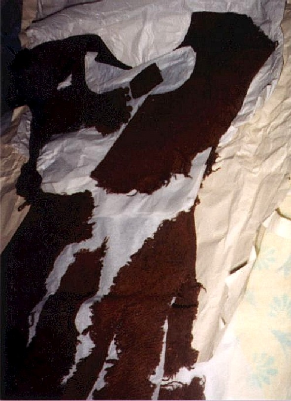
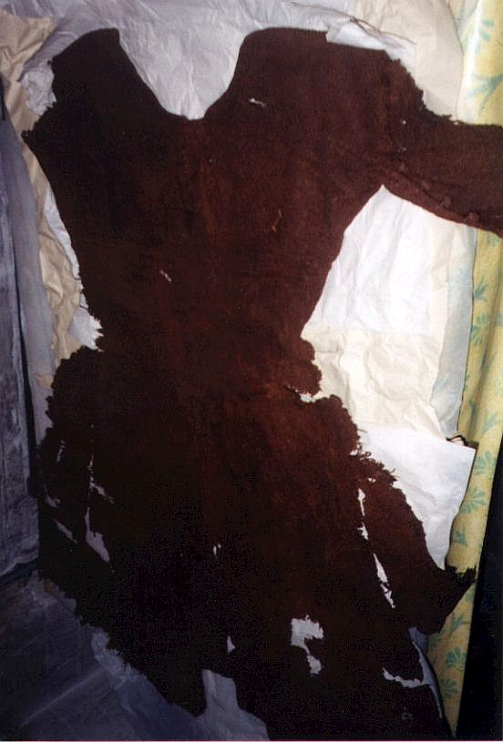
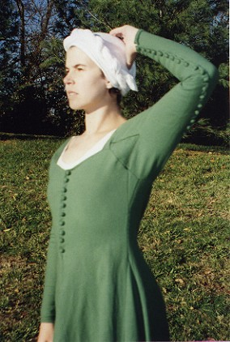
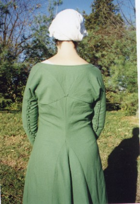
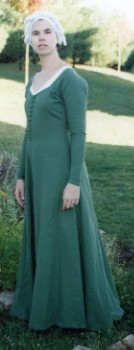

In 1931, the body of a woman was found in a bog at Moy, County Clare, Ireland. Though the body was badly decomposed, the garment she wore remained in remarkable condition and the discoverer wrote immediately to the National Museum of Ireland in Dublin to tell them of his find.
On the paper in which the garment is wrapped is written: "This woolen garment was found on the body of a woman (?) at Moy, Co. Clare. 1931:305 B24:13 Indexed". This is the only documentation on the gown to date. The files in the Museum contain nothing on either the gown or the body. In fact, the only thing in the file is the correspondence between the farmer who found the gown and the Museum, arguing over price (by Irish law, a discoverer is due the market value of his discovery). In the correspondence, the farmer argued for the antiquity of the gown and the Museum rather forcefully stated that it was relatively modern. Why the Museum thought that the gown was only about 100 years old is unknown to us.
One can only suppose that the date of the find had something to do with this dearth of documentation on this important archeological discovery. The Irish Free State was established in 1922 and as a result of protectionist policies, an "economic war" raged between Ireland and the English during the years of the 1930s. Hardly a time one can imagine people paying attention to archeological discoveries!
Textile researcher Lisa Bender Jorgenssen studied the weaves of many of the extant textiles housed at the National Museum of Ireland. Her entry for the Moy Gown reads: "Moy, Co. Clare, Ireland. NMI 1931:305. Brown dress in woollen [sic] cloth, found on female bog corpse. Post-medieval." Her reasons for calling the garment post-medieval are unclear.
The fabric from which the Moy gown is made is wool woven in a 2/1 twill. The thread count varies from 18 to 21 per inch along the horizontal and 20 per inch along the vertical. The cloth is woven from Z-spun singles and the individual threads vary from 1mm to 1.5mm wide.
The Moy gown can be classified as a cotehardie, a style of gown worn on the Continent since the early 14th century. However, Irish illustrations show women wearing this type of kirtle well into the 17th century. Therefore, the exact age of the gown is uncertain. No scientific analysis (carbon dating, pollen analysis, etc.) of the garment has been done.

The neckline of the Moy gown is a rather low scoop, finished meticulously by turning a �" of the fabric inside and fixing it in place with a blind stitch. The front of the gown is buttoned closed, but we do not know how far down the buttons ended because of the fragmentary nature of the remaining fabric. The buttonhole side (the left) that remains is 8 �" long and the button side is 4 �". The buttonholes are about 1.1" apart and the buttons are 1 �" from shank to shank. The buttons are 6/10" in diameter and the buttonholes are 7/10".The left and right frontpieces of the gown are quite square, stopping not far above the scoop neckline. The bodice is shaped at the sides by the insertion of two small gores. The right side gore measures 2" at the top (where it joins the sleeve), 3 �" where it joins the front of the gown, and 4 7/8" where it joins the back. A similar gore sits in the same position on the other side measuring 1.7" on top, and 5" on either side. The interior angles on the top corners are both 92 degrees, indicating that the sides of the gore must be slightly rounded.
The squarish bodice is attached to two straps which are 2" wide where they meet the bodice and decrease gradually to �" wide at the shoulder ridge. These straps were cut curved, as evidenced by the grainlines which are straight on the side where the straps attach to the sleeves but curved around the neckline. The straps are about 8" long from the seam attaching them to the bodice to the shoulder ridge. At the ridge, they widen again and become a "Y" shape ending just under the shoulderblades.

The upper back of the gown is a curious construction. It appears that the gown was cut out of square pieces of fabric, and that other pieces were inserted to make it fit the body. On the back, two trapezoidal gussets cover the shoulderblades. They are 8 �" to 8 3/8" along the top, 8" along the inner edge, 6 �" along the outside (where they meet the lower part of the sleeve) and 8 �" - 8 3/8" along the bottom. They span the area from the perpendicular edge of top of the sleeve to the middle of the back.The sleeves of the gown are very curious. Their construction is extremely simple, but almost demands that they be fitted on the body of the wearer. The sleeves are simple rectangles, each about 16" wide. The 16" edge is sewn to the straps described above, with the edge of the sleeve being sewn to the top of the shoulder gussets. The rectangular sleeve then wraps around the arm and attaches to the outside edge of the same shoulder gusset (the 6 �" side) being turned 90 degrees in its journey. A 3 �" by 4" by 4 �" triangle is inserted in a slit in the front of the arm, around the area of the armpit. This gore helps the sleeve fit better. The result is a sleeve that hugs the shoulder but doesn't have the stress of a shoulder seam.

Although it is impossible to tell if the sleeves were originally wrist length or elbow length, my guess is that they came to the wrist. All the buttoned-sleeved garments in contemporary illustrations and sculptures are long sleeved. Although short-sleeved cotehardies are in evidence, there are no buttons on these sleeves. Additionally, there is no logic in placing buttons on a short sleeve. The sleeve can be quite close-fitting and still slip over the wrist easily without the use of a closure like buttons. Buttons seem to indicate that the sleeves were long. Therefore, it is safe to assume the Moy gown originally have wrist length sleeves.Unlike contemporary sources, however, the buttons on the sleeves of the Moy gown do not stop above the elbow but rather continue up to where the sleeve meets the shoulder gusset. It has been assumed that this was to accommodate the full sleeves of the leine worn underneath. However, there is no evidence to suggest that these sleeves were worn unbuttoned or partially buttoned.
The back body piece of the gown, like the front, is rather square, being shaped by the gore and gussets sewn into it. Under the shoulder gussets, from underarm gore to underarm gore, the back measures 18". At the level of the skirt gores described below, it measures 15" wide. >From the bottom of the scoop neck to the top of the center back gore measures 16" and it is 9 �" from the bottom of the "Y" piece to the top of the same gore.

Like many extant tunics from the Middle Ages, the Moy gown is widened in the skirt by the insertion of gores into the side seams of the garment. A double width gore is also set into a slit in the center back of the dress, there being no seam in that area. The skirt is fragmentary, but what is left of the gores is 24" along each side. The center gores are set 16" down from the back neckline, which is 21" from the shoulder ridge. The side gores are set at the same level as the center back.There is an approximately 2" x 2" patch at the top of the center back gores. The patch covers a hole in the garment where the center back gores have made a point of stress on the gown body. It has not been determined if this patch is original or recent. There are also holes above the right and left side gores, demonstrating that these were common stres points.
A curious square is missing from the bottom of the gown in back. After reading the correspondence between the farmer who found the garment and the Museum, it has been determined that the farmer cut this piece of the gown away for some purpose, possibly to prove his possession of the garment to the Museum. The extant letters scold him for this behaviour.
A green 2/2 twill lightweight wool was used for the reconstruction as 2/1 twills were unavailable at the time. The fabric was washed in hot water and strong soap to remove any chemical finishing and to lock the fibres together to prevent unraveling.
Since the recipient had similar upper body measurements to those of the original gown, the trapezoidal shoulder gussets, front straps, back "Y" and underarm gussets were cut the same size as the original. These pieces were basted together (with the assistance of Jennifer Munson and Sheree Krasley) and fitted on the wearer. Long rectangles cut to size were used to supply the rest of the gown (fronts, back and sleeves) and these were fitted as well. Triangular gores were added at the front, and sides and a double gore was sewn in back. The back of the garment was cut in two parts even though the original was one panel. This was due to a cutting mistake. Instead of inserting the back gores in a slit in the back panel, they were sewn in between the two back pieces, as in a typical cotehardie. The stressed seams (shoulders, gore tops, gussets) were sewn with wool thread in a backstitch to strengthen them. The other seams are running stitches as in the original. The edges of the original are turned over once and blind-stitched. However, I chose to roll hem the edges of this garment because the fabric was a much looser weave than the original.
The front of the gown and the backs of the sleeves are closed with cloth buttons set at roughly 1" apart. They are stuffed with scrap of the same material and sewn with silk thread. The originals were attached with wool, but the wool thread kept breaking. When I examined the garment, I was not permitted to remove a button and verify how it was attached. Therefore the button-making technique discovered in the York and Herjolfsnes digs was followed.
The buttonholes are bound with wool thread using a buttonhole stitch similar to that seen in the York excavations. The buttonholes on the original were simply bound with a whipstitch, but the fabric was a much tighter weave than the wool with which I worked. The buttonhole stitch is more likely to prevent raveling with wear.

� 2000 by Kass McGann � The Author of this work retains full copyright for this material. Permission is granted to make and distribute verbatim copies of this document for non-commercial private research purposes provided the author's name, the copyright notice and this permission notice are preserved on all copies.